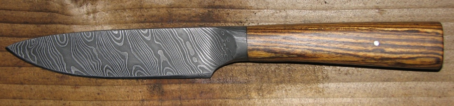
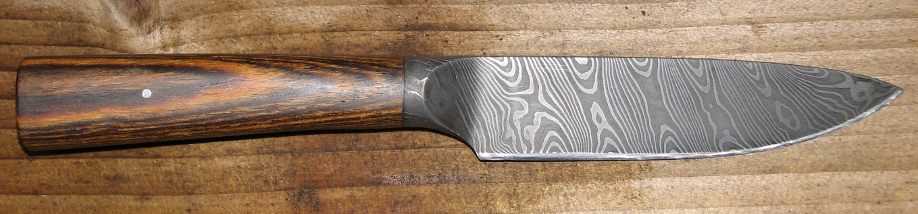

a pattern welded integral bolster knife
August 2010
I made this knife for my business partner Peter as a retirement present.
The blade has 36 layers of 15n20 and EN45 which I forged into a round bar and twisted. The handle is Bocote (Mexican Rosewood).
